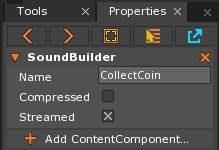

Sounds
Sound is a resource that handles any sound that is imported. Sound resources can be imported from a file and then passed in to a SoundCue to make it available to the Audio engine.
Common Uses
- Representing pre-made sound files that are imported from outside Zero
- As the resource passed in to a SoundCue for use within a project
Using the Sound Resource
When a Sound is imported and the new Sound resource is opened in the Library, the SoundBuilder option to add a ContentComponent will appear in the Property Window, as seen here:

The properties for the Sound resource in the SoundBuilder are enumerated in the table below:
| Property | Description |
|---|---|
Name : String |
The name of the Sound resource. |
Compressed : Boolean |
If set to true will compress an imported .wav into an .ogg file. This only occurs during runtime and will NOT affect the total size of the project. Using Compressed may result in a slight delay when playing the Sound. |
Streamed : Boolean |
If set to true, the sound file will be streamed during runtime. Only use with very large sound files that may negatively affect performance if not streamed. |
Note
As a streamed sound file will be shared by all SoundCues that use it, they should not have loop points set or be played multiple times at once. Doing so could cause the sound to play in an unexpected manner in the different locations.
There are no properties or functions available in Zilch specific to the Sound resource itself, only those on the SoundBuilder.